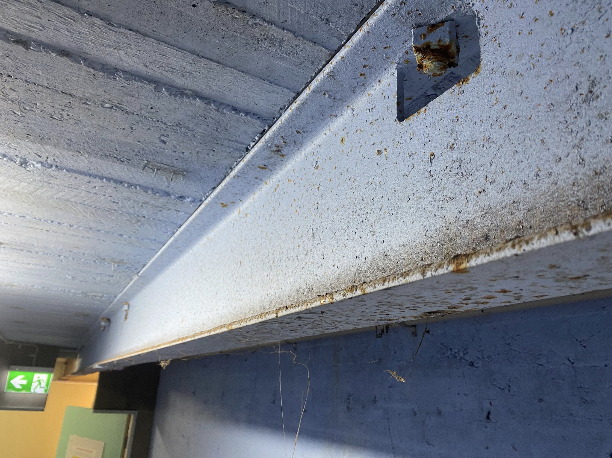
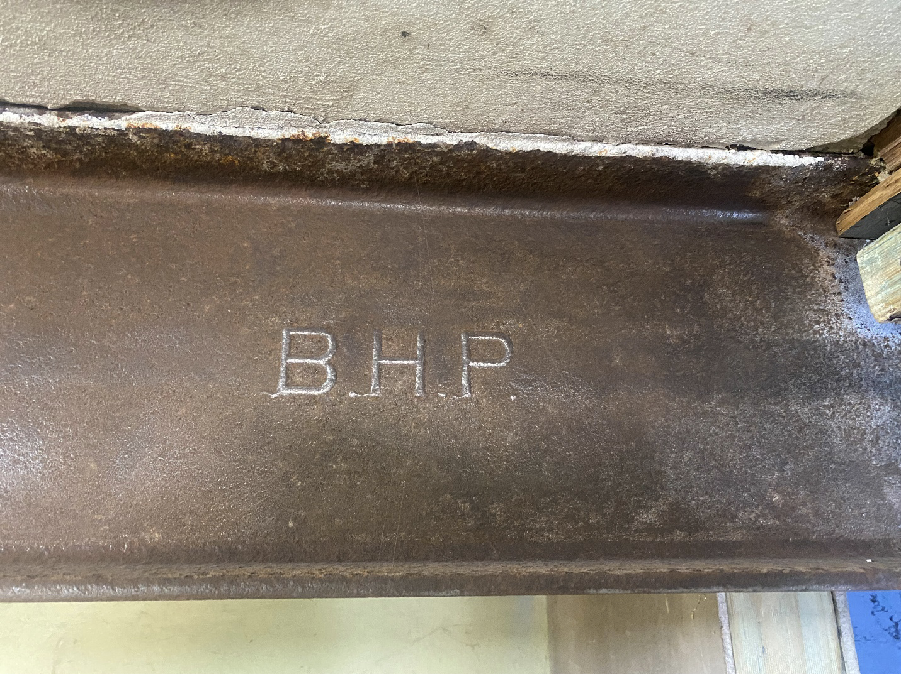
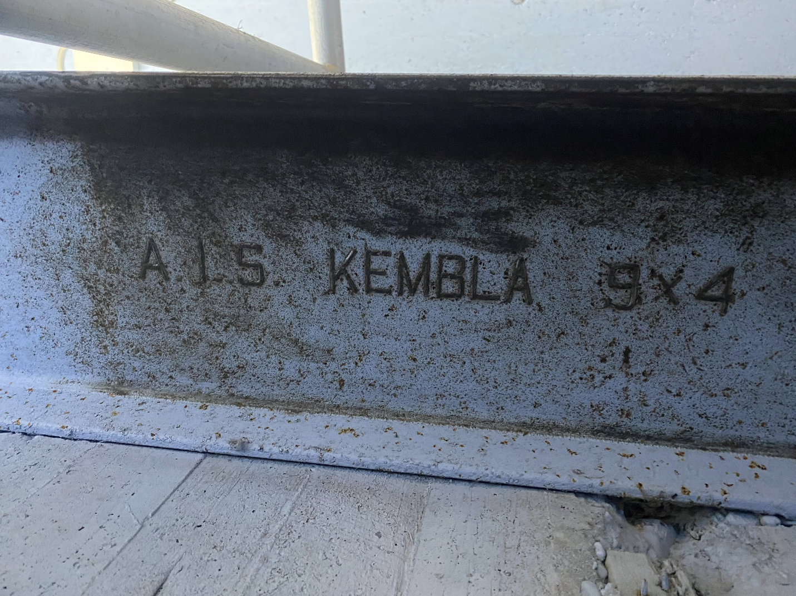
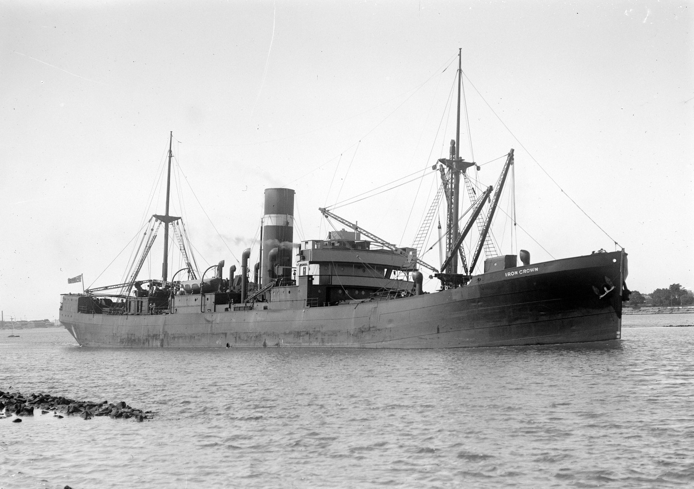
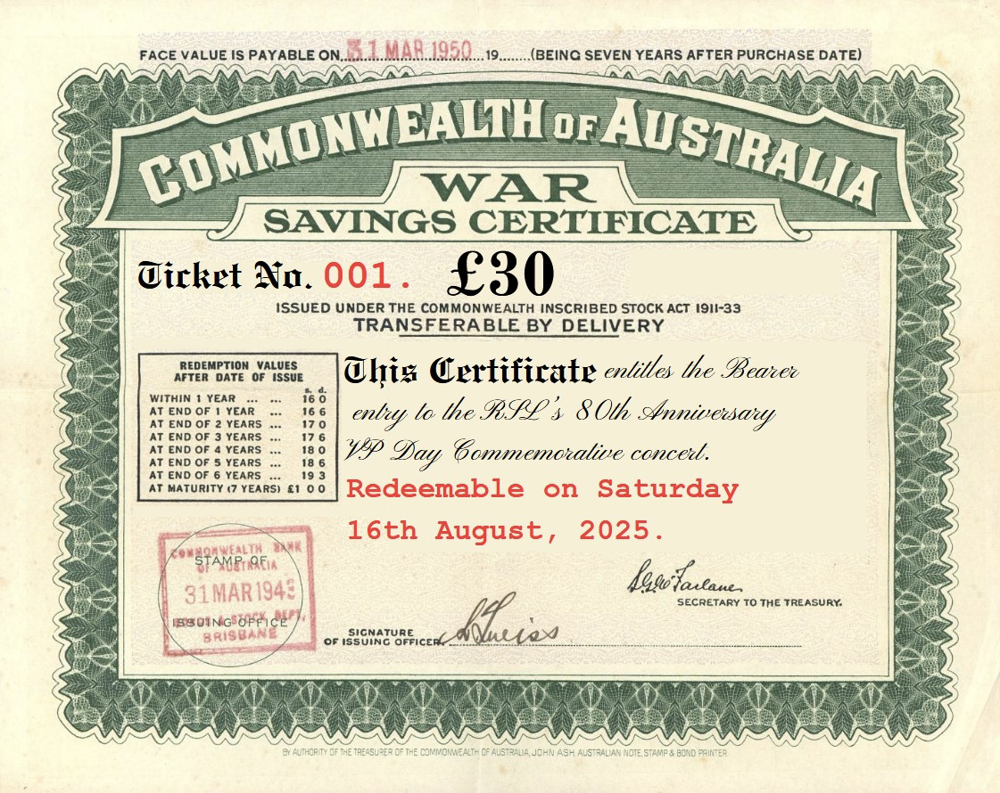

The steel beam which is fixed to the ceiling of the Operations ‘engine room’ in the wartime bunker of the No. 11 OBU RAAF (Operational Base Unit). This beam was covered in layers of paint and corrosion after 80 years in situ. The beam was used to install the two diesel engines which generated power for the Operations Room. Did your ancestor serve at Moruya during WW2? If so, we would love to hear from you.
The World War Two bunker near Moruya Aerodrome is in the final stages of renovation in preparation for the 80th Anniversary of VP Day; Victory in the Pacific. And a good dose of rust removal and wire brushing of a steel rail has unexpectedly revealed a link between the small coastal town of Moruya, and the industrial might of Port Kembla at a time when BHP steel went to war.
The underground bunker which was the old RAAF Operations Building of the No. 11 Operational Base Unit, is now home to the Thelmore Pistol Club. And a vital grant from Sports NSW has brought this wartime bunker back from a watery grave; the building having been severely affected by flooding caused by the 2023 rains.
Quite unexpectedly, lettering embossed onto the steel rail which once lifted heavy diesel engines into place, became evident. One beam displayed the initials ‘B.H.P.’ and another revealed the wording ‘A.I.S. KEMBLA 9 X 4’. Of course, these initials relating to ‘Broken Hill Pty Ltd’ and ‘Australian Iron & Steel Port Kembla’.

The removal of 80 years of paint and corrosion revealed this embossed lettering, indicting the origins of the steel beam.

Volunteers were thrilled to discover these manufacturer markings, during renovation of the 1942 Operations bunker. If you would like to see what a genuine World War Two bunker looks like, join us at Moruya for a free tour on Saturday 16th August 2025 during the VP Day commemorative weekend. And join us that evening for a night of 1940’s hits sung live, during the Moruya RSL Charity Concert. Tickets $30 includes supper.
With construction on this particular bunker commencing during those dark days of 1942, the building was completed early in 1943. At this time, the battle for Kokoda had just been won and Australian troops were fighting alongside their American allies at Buna in the bloody battle of the Beach Heads, including Gona and Sanananda. On the other side of the world in North Africa, Australians had recently participated in the 2nd Battle of El Alamein. So, it was a real thrill to discover these markings, linking this World War Two bunker to the Australian steel industry on the home front.
Heavy Industry in any country is always a potential target during times of war. And whilst it is now known the Japanese were never going to launch a seaborne invasion upon Australia, during 1942 the fear was very real. After the fall of Singapore to the Japanese on 15th February, Mr. Robert Heffron (the Minister for the National Emergency Services) claimed that “Japanese bombing raids on Sydney, Newcastle and Port Kembla were almost certain within the next few weeks, followed by an invasion attempt”. Thankfully, he was proven wrong in that statement. But where Mr Heffron was absolutely correct was in identifying the steel cities of Newcastle and Port Kembla as potential targets. Especially as the submarine war along the east coast of Australia was about to commence; with some of the ‘pre-war,’ peace-time merchant sailors of Japan and Germany now crewing these enemy raiders.

The S.S. Iron Crown which was sank in just 60 seconds, with the loss of 38 crew.
The ships of the B.H.P. merchant fleet played an important role in Australia’s wartime industry, delivering “some 13 million tons of iron ore and limestone” during WWII, according to its wartime director Essington Lewis. Shipments operated mostly between Whyalla, Newcastle and Port Kembla, which placed them at significant risk from Axis submarines. Laden with iron ore, these steel transports were dubbed ‘death ships’ by their crews because of the speed at which they sank, if torpedoed. On June 4th, the S.S. Iron Crown, which was en route to Port Kembla from Whyalla, sank in just 60 seconds off Cape Howe with the loss of 38 of her 43 crew.
Similarly, the S.S. Iron Knight sank in just 2 minutes during February of 1943 off Montague Island with the loss of 36 men. Rescue ships were dispatched from Moruya to help with the rescue of survivors of the Iron Knight. When a memorial plaque dedicated to these sailors was unveiled in 1950, Lewis would state that “Without the effort of these mariners, the work of the Steel Works could not have gone on.” The merchant sailors of the B.H.P. fleet risked their lives operating their ships, enabling the transport of steel for the construction of weapons and fortifications (like those at the No. 11 Operational Base Unit) that played their part in winning the Second World War. This particular bunker at Moruya will be officially opened on the VP Day weekend, with local volunteers and the RSL dedicating three days to the commemoration of this historic event.
Three different tours will be conducted over three days from Friday 15th to Sunday 17th of August 2025 and whilst these tours are at no cost to the public, bookings are highly recommended and can be found here. The official opening of the bunker is scheduled for 11:15 am on Saturday, following a guided tour of all four wartime bunkers. This ‘cutting of the ribbon’ will be conducted by Dr. Michael Holland MP who is the Member for Bega; on behalf of the Minister for Sport, the Honourable Stephen Kamper.
If you ever considered a ‘road trip’ to Moruya or are interested in Australian History, this weekend is not to be missed! A highlight of the weekend will be a 1940s Charity Fund Raiser Concert conducted by the Moruya R.S.L Sub-Branch, featuring many hits of the era, including Vera Lynn and the Andrews Sisters. This concert is a ‘one-off’ event and will never be repeated, with live performances from local and interstate artists. Price is $30, which includes supper, and tickets are available from the Moruya RSL or can alternatively be bought online here.

Buy War Bonds! Albeit 80 years after peace was declared! The Moruya RSL is conducting a charity fund raiser concert, with many hits of the 1940’s being sung by local and interstate artists.